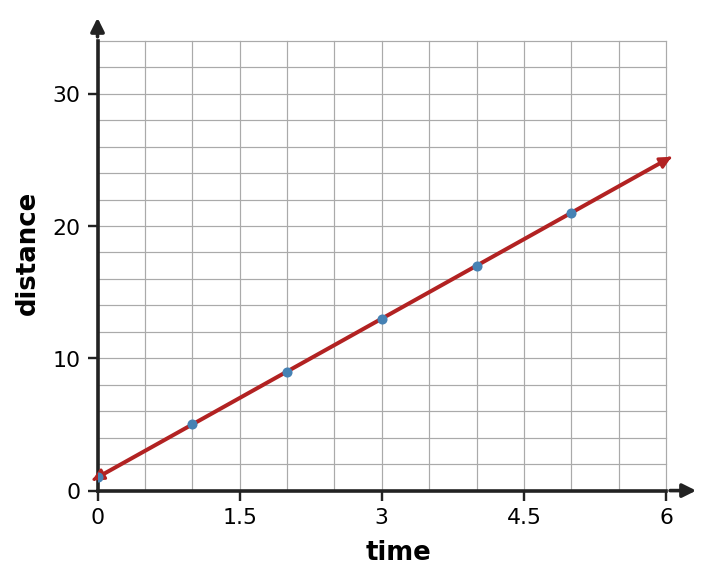
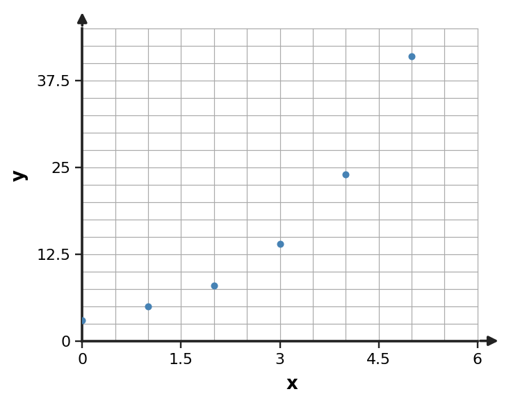

Modeling Investigation
Function Analysis, Modeling, and Synthesis
Use structure, representations, and context as evidence—not decoration.
Learning Target
Students will create and analyze mathematical models using real-world data.
- I can formulate a mathematical model from real-world data and state the assumptions used.
- I can extend a model to make predictions within a reasonable domain.
- I can critique how well a model fits data, constraints, and the situation being studied.
Vocabulary / Key Notation Preview
model · assumption · domain · constraint · prediction
Sort the vocabulary. Write each vocabulary word in the column that best matches what you know right now. You may move a word later.
| Know for sure | Recognize | Don't know yet |
|---|---|---|
What's to Come
DO NOT SOLVE IT YET.
Circle anything familiar, underline symbols, labels, conditions, data, or features that seem important, and write short notes about what you think may matter later.
A small data set and scatterplot describe a bicycle speed experiment. Choose a first model family, state one assumption, use the model idea to make a prediction inside the observed range, and name one reason you might revise the model after collecting more data.
| time (s) | distance (m) |
|---|---|
| 0 | 1 |
| 1 | 5 |
| 2 | 9 |
| 3 | 13 |
| 4 | 17 |

Let's Get Started
Skim the section. Record what catches your attention before you read closely.
| What I noticed | |
|---|---|
| What I predict | |
| What I wonder |
READ IN SHORT CHUNKS.
Annotate the words and visuals together. Underline evidence, circle or highlight bold vocabulary, label arrows, measurements, or important features, connect sentences to figures, and jot short questions or connections in the margins.
I can formulate a mathematical model from real-world data and state the assumptions used.
Modeling starts before an equation is written. First define the quantities, units, and the question the model should answer. Then organize the data in a table or scatterplot and look for a structure that a known function family can reasonably represent. A model is a simplified relationship built for a purpose; it does not have to pass through every observed data point to be useful.
The family choice should come from evidence. Roughly constant additive change suggests a linear model, systematic curvature can suggest a quadratic model, and roughly constant multiplicative change can suggest an exponential model. A scatterplot helps reveal overall shape, while differences, ratios, and context help distinguish patterns that may look similar over a short interval.
Every model depends on at least one assumption. A constant-rate model assumes the rate is stable enough over the interval. A growth model assumes the multiplicative process continues approximately the same way. State assumptions openly because they explain why the model is reasonable now and what kind of new evidence could make the model fail later.
- What should be defined before choosing a model family from a real data set?
- Why can a useful model miss some observed points?
- What is the purpose of stating an assumption with a model?
- Define variables, units, and the question.
- Represent the data: table and/or scatterplot.
- Choose a candidate family from pattern + context.
- Write or estimate a model and state assumptions.
- Check fit and constraints.
- Interpret, predict, and revise when evidence changes.
Example 1: Choose a First Model
Choose a model family for the data and state the evidence that supports it.
| $x$ | 0 | 1 | 2 | 3 | 4 |
|---|---|---|---|---|---|
| $y$ | 12 | 15 | 18 | 21 | 24 |
You Try It 1: Choose a First Model
Choose a model family for the data and state the evidence that supports it.
| $x$ | -2 | -1 | 0 | 1 | 2 |
|---|---|---|---|---|---|
| $y$ | 9 | 4 | 1 | 0 | 1 |
Example 2: State the Limits of the Model
A fitted model describes battery performance for days 0 through 40. Explain why a prediction at day 300 should be treated cautiously even if the formula can be evaluated. Name one condition that might change outside the observed window.
You Try It 2: State the Limits of the Model
A fitted model describes ticket sales for days 0 through 14. Explain why a prediction at day 120 should be treated cautiously even if the formula can be evaluated. Name one condition that might change outside the observed window.
I can extend a model to make predictions within a reasonable domain.
A prediction is safest when the input is inside, or close to, the range where the model was built. Predicting between observed values is interpolation; predicting beyond the observed range is extrapolation. Extrapolation is not automatically wrong, but it depends more heavily on the assumption that the same pattern continues.
A reasonable domain comes from both data and context. The observed x-values provide one source of support, while real limits—time, capacity, nonnegative quantities, physical boundaries, or policy rules—provide another. A formula may accept an input that the situation does not. Modeling requires deciding whether that input belongs to the story.
Before extending a model, ask what could change. Constant speed can fail if traffic changes. A fill rate can change if pressure drops. An exponential trend can slow as resources become limited. Predictions are therefore claims with conditions: use the model, state the domain, and recognize the assumption that makes the extension defensible.
- What is the difference between interpolation and extrapolation?
- Why can an input be algebraically valid but outside a reasonable modeling domain?
- What should happen to a prediction if a key model assumption stops being true?
Usually stronger support; still check context.
Extrapolation; requires stronger assumptions and more caution.
Can restrict the domain even when the formula is defined.
Use it to test and revise the model.
Example 3: Choose from Scatterplot Shape
Use the scatterplot shape and the changing pattern to choose a reasonable model family. Give one reason.

You Try It 3: Choose from Scatterplot Shape
Use the scatterplot shape and the changing pattern to choose a reasonable model family. Give one reason.

Example 4: State an Assumption for Prediction
A linear model predicts distance traveled over a short drive. State one assumption needed for a constant-rate linear model to remain reasonable, and describe what a violation would look like in the data.
You Try It 4: State an Assumption for Prediction
A linear model predicts water added to a pool. State one assumption needed for a constant-rate linear model to remain reasonable, and describe what a violation would look like in the data.
I can critique how well a model fits data, constraints, and the situation being studied.
Critiquing a model means checking more than whether its equation looks familiar. Compare predicted values with observed data, inspect whether the errors are small enough for the purpose, and look for a pattern in those errors. If a model is consistently too high in one region and too low in another, the error pattern suggests the chosen family may be missing structure in the data.
A simple error measure at one point is observed minus predicted. A positive result means the observation is above the model, so the model underpredicts there. A negative result means the observation is below the model, so the model overpredicts. These signed errors are often called residuals; the sign tells direction while the magnitude tells how far apart model and data are.
Fit is only one part of the critique. A model can have small numerical errors yet violate a constraint or make an unrealistic prediction. The strongest evaluation combines numerical fit, domain, assumptions, and contextual meaning. A model should be judged by how well it serves the question it was built to answer.
- If observed minus predicted is positive, is the model underpredicting or overpredicting?
- Why is a pattern in residuals more concerning than a few small random errors?
- Name one reason a model with small numerical error could still be unreasonable.
| Residual $r=y_{obs}-y_{pred}$ | Meaning |
|---|---|
| $r\gt0$ | model underpredicts |
| $r\lt0$ | model overpredicts |
| $r\approx0$ | prediction is close to observation |
Look at the size and pattern of residuals, then check domain and context constraints.
Example 5: Predict and Interpret
A bike-rental model is $C(h)=8+5h$ for $0\le h\le8$. Predict the cost for 6 hours and interpret the result.
You Try It 5: Predict and Interpret
A kayak-rental model is $C(h)=10+4h$ for $0\le h\le9$. Predict the cost for 7 hours and interpret the result.
Example 6: Measure Model Error at a Data Point
A model predicts $y=2x+1$. For the observed point $(4,10)$, compute observed minus predicted and say whether the model underpredicts or overpredicts.
You Try It 6: Measure Model Error at a Data Point
A model predicts $y=3x-1$. For the observed point $(5,16)$, compute observed minus predicted and say whether the model underpredicts or overpredicts.
Summary
- Build models from defined quantities, data patterns, context, and explicit assumptions.
- Make predictions within a justified domain and treat extrapolation with extra caution.
- Critique models using observed-versus-predicted error, residual patterns, constraints, and contextual meaning.
Common Mistakes
| Mistake | Better move |
|---|---|
| Treating the model as exact | Real data may vary; judge whether the model is useful for the purpose. |
| Extrapolating without justification | State the domain and the assumption that supports extending the model. |
| Checking fit but ignoring context | A numerically close model can still violate constraints or be unreasonable. |